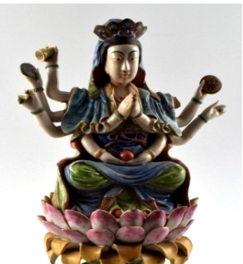

🔇 Is bhasha me is vastu ka audio abhi uplabdh nahi hai.
3. CS - I - 305: पद्मसंभव

3. CS - I - 305
कमल पर आसन लगाए हुए मुकुटधारी देवी पद्मसंभव की चित्रित चीनी मिट्टी की मूर्ति। यह दाओ मत की आकृति है, जिसमें दस भुजाएँ हैं और प्रत्येक हाथ में विभिन्न प्रतीकात्मक वस्तुएँ धारण किए हुए हैं। मूर्ति रंग-बिरंगे ढीले वस्त्रों में सुसज्जित है और तरंगों के ऊपर बने कमल के आधार पर स्थापित है। पद्मसंभव तांत्रिक बौद्ध धर्म की एक प्रमुख हस्ती हैं, जो तांत्रिक साधनाओं और अनुष्ठानों के कुशल प्रयोग के लिए प्रसिद्ध हैं। तिब्बती बौद्ध धर्म में पद्मसंभव को अत्यंत श्रद्धा के साथ पूजनीय माना जाता है और उन्हें तिब्बत में इस धर्म के संस्थापक पिताओं में से एक माना जाता है। तिब्बत में बौद्ध धर्म की स्थापना और सुदृढ़ीकरण में पद्मसंभव की महत्वपूर्ण भूमिका रही। कहा जाता है कि उनका जन्म एक कमल के फूल से हुआ था — यह प्रतीक बौद्ध कला और साहित्य में सामान्य रूप से प्रयुक्त होता है। पद्मसंभव तिब्बती संस्कृति के केन्द्रीय व्यक्तित्व हैं और उनकी प्रतिमाएँ, चित्रकला तथा अन्य कलात्मक रूप तिब्बत भर में पाए जाते हैं। यह मूर्ति जापान से उत्पन्न हुई है और 19वीं शताब्दी की है।
3. CS - I - 305: Padmasambhava
3. CS - I - 305
A painted porcelain figure of the crowned deity Padmasambhava, seated upon a lotus. It is a Dao-sect figure with ten arms, each hand holding a different symbolic object. The figure is dressed in colourful flowing robes and is set upon a lotus base rising above waves. Padmasambhava is a major figure of Tantric Buddhism, renowned for the skilful use of tantric practices and rituals. In Tibetan Buddhism, Padmasambhava is venerated with great devotion and is considered one of the founding fathers of the religion in Tibet. Padmasambhava played a vital role in establishing and consolidating Buddhism in Tibet. He is said to have been born from a lotus flower — a symbol commonly used in Buddhist art and literature. Padmasambhava is a central figure of Tibetan culture, and his statues, paintings and other artistic forms are found throughout Tibet. This figure originates from Japan and dates to the 19th century.
3. CS - I - 305: పద్మసంభవ
3. CS - I - 305
కమలంపై ఆసీనులై ఉన్న కిరీటధారి పద్మసంభవ యొక్క రంగులద్దిన పింగాణీ ప్రతిమ. ఇది దావో మతానికి చెందిన ఆకృతి, దీనికి పది భుజాలు ఉన్నాయి మరియు ప్రతి చేతిలో వేర్వేరు సంకేతాత్మక వస్తువులు ఉన్నాయి. ప్రతిమ రంగురంగుల వదులైన వస్త్రాలతో అలంకరించబడి, అలలపై ఏర్పడిన కమల పీఠంపై స్థాపించబడింది. పద్మసంభవ తాంత్రిక బౌద్ధ ధర్మంలోని ప్రముఖ వ్యక్తి, తాంత్రిక సాధనలు మరియు ఆచారాల నైపుణ్యవంతమైన వినియోగానికి ప్రసిద్ధి. టిబెటన్ బౌద్ధ ధర్మంలో పద్మసంభవను ఎంతో భక్తితో పూజిస్తారు, టిబెట్లో ఈ ధర్మ స్థాపక పితామహుల్లో ఒకరిగా భావిస్తారు. టిబెట్లో బౌద్ధ ధర్మాన్ని స్థాపించడంలో, సుస్థిరం చేయడంలో పద్మసంభవ కీలక పాత్ర పోషించారు. ఆయన కమల పుష్పం నుండి జన్మించారని చెబుతారు — ఈ సంకేతం బౌద్ధ కళ మరియు సాహిత్యంలో సాధారణంగా ఉపయోగిస్తారు. పద్మసంభవ టిబెటన్ సంస్కృతిలో కేంద్ర వ్యక్తిత్వం, ఆయన ప్రతిమలు, చిత్రాలు మరియు ఇతర కళారూపాలు టిబెట్ అంతటా కనిపిస్తాయి. ఈ ప్రతిమ జపాన్ నుండి వచ్చినది, 19వ శతాబ్దానికి చెందినది.
3. سی ایس-I-305: پدمسمبھوا
3. سی ایس-I-305
یہ ایک کھڑی ہوئی جاپانی خاتونمایکوکا مجسمہ ہے جو دونوں ہاتھوں میں چھتری تھامے ہوئی ہے۔ اس کے سینے پر گلابی رنگ کے موتیوں کی مالا ہے جو بیلٹ کی مانند دکھائی دیتی ہے۔ مایکو نے پھولوں کے نقش و نگار والا لباس پہنا ہوا ہے اور سر پر پھول لٹک رہے ہیں۔مائیکو دراصل کیوٹو میں گیشا بننے والی طالبہ لڑکیوں کو کہا جاتا ہے۔ انہیں جاپانی رقص سیکھنا ضروری ہوتا ہے، اسی وجہ سے انہیں مایکو کہا جاتا ہے۔مائی کا مطلب رقص اور کو کا مطلب لڑکی ہے۔گیوشا کے گڑیا نما مجسمے جاپان کی خوبصورت خواتین کی نمائندگی کرتے ہیں، جو رقص گائیکیگفتگو اور دیگر صلاحیتوں کے ذریعے تفریح فراہم کرتی ہیں۔ ہر جاپانی گیوشا گڑیا کا لباس ریشم سے نہایت باریک کاریگری کے ساتھ تیار کیا جاتا ہے اور یہ حقیقی جاپانی گیوشا کے کیمونو جیسا دکھائی دیتا ہے۔تمام جاپانی گیوشا گڑیا سیاہ لکڑی کے چبوترے پر نصب کیے گئے ہیں تاکہ اعلیٰ معیار کی خوبصورتی سامنے آئے۔یہ گڑیا جاپانی حکومت کی جانب سے سالار جنگ میوزیم کو مارچ 1966 میں تحفے میں دیے گئے تھے۔
2. سی ایس-I-303: چوہا پرسوار گنیش جی
یہ بھگوان گنیش کا چینی مٹی سے تیار کیا گیا مجسمہ ہے، جو چار ہاتھوں والا ہے ۔ اس کا اوپری لباس سرخ رنگ کا ہے۔یہ مجسمہ ہندوستان میں تیار کیا گیا اور بیسویں صدی سے تعلق رکھتا ہے۔گنیشجی کو عام طور پر چوہے پر سوار دکھایا جاتا ہے، جو ان کی سواری ہے۔ چوہابےچینذہن خواہشات اور پیچیدہ حالات میں قابو پانے کی صلاحیت کی علامت ہے۔ گنیش جی کا چوہے پر سوار ہونا یہ ظاہر کرتا ہے کہ وہ منفی توانائی کو مثبت میں تبدیل کرنے کی صلاحیت رکھتے ہیں۔گنیشجی ہندو مذہب میں ہاتھی سر والے دیوتا ہیں۔ وہ بھگوان شیو اور دیوی پاروتی کے بیٹے ہیں۔گنیش جیہندو مذہب کے نہایت مقبول اور کثرت سے پوجے جانے والے دیوتاؤں میں شمار ہوتے ہیں۔ ہندو روایت کے مطابق گنیش کو دانائی دولت کامیابی اور خوش بختی کا دیوتا مانا جاتا ہے۔
3. سی ایس-I-305: پدمسمبھوا
یہ تاج پہنی ہوئی دیوی پدمسمبھوا کا رنگین چینی مٹی سے بنا ہوا مجسمہ ہے، جو کمل کے پھول پر بیٹھی ہوئی ہیں اور ان کے دس بازو ہیں۔ یہ پیکر ڈھال کر تیار کیا گیا ہے جس میں دس ہاتھ مختلف علامتی اشیا تھامے ہوئے دکھائے گئے ہیں۔ انہوں نے شوخ رنگوں کے آرام دہ اور دلکش لباس زیب تن کی ہوئی ہیں، اور یہ مجسمہ لہروں کے اوپر بنائے گئے کمل نما چبوترے پر نصب ہے۔ یہ بدھ مت کے تانترک مکتبفکر کی ایک نمایاں اور باوقار شخصیت سمجھی جاتی ہیں، جو اپنی روحانی مہارت اور تانترک عبادات و رسوم کے باعث شہرت رکھتے ہیں۔ تبتی بدھ مت میں انہیں نہایت عقیدت کے ساتھ یاد کیا جاتا ہے اور اکثر تبت میں بدھ مت کی بنیاد رکھنے والی عظیم شخصیات میں شمار کی جاتی ہیں ۔ کہا جاتا ہے کہ یہ کمل کے پھول سے پیدا ہوئی، جو بدھ مت کے فن و ادب میں ایک معروف اور مقدس علامت ہے۔ تبت کی ثقافت میں ان کی حیثیت مرکزی ہے اور انہیں مجسموں مصوری اور فنون لطیفہ کی دیگر صورتوں میں کثرت سے پیش کیا جاتا ہے
4سی ایس-I-812: بونا کا مجسمہ
یہ مجسمہ سات بونوں میں سے ایک کردار ڈاک کا ہے جو درخت کے تنے پر بیٹھا ہوا ہے۔ اس کا بایاں ہاتھ کمر پر ہے۔ اس نے سبز رنگ کی ٹوپیسفید قمیص اور سیاہ جوتے پہن رکھے ہیں۔ کمر پر سیاہ بیلٹ ہے ۔ سات بونے ڈزنی کی مشہور متحرک فلم “اسنو وائٹ اینڈ دی سیون ڈوارفس” کے کردار ہیں۔ ان کے نام یہ ہیں ڈاک گرَمپیبےشفول ، سلیپی، اسنیزی، ہیپی اور ڈوپی ۔ ہر ایک کی شخصیت منفرد ہے۔ یہ سب ایک چھوٹے سے کاٹیج میں رہتے ہیں اور ہیروں کی کان میں کام کرتے ہیں۔ وہ اپنی مہربانی اور اسنو وائٹ کو اپنے گھر میں خوش آمدید کہنے کے لیے جانے جاتے ہیں۔ ڈاک اس گروہ کا رہنما ہے اور ذہین و دانا سمجھا جاتا ہے۔ گرَمپی سب سے زیادہ چڑچڑا ہے۔ بیشفل نہایت شرمیلا اور قدرے رومانوی مزاج رکھتا ہے۔ سلیپی ہمیشہ تھکا ہوا محسوس ہوتا ہے۔ سنیزی کا نام اس کی عادت کی طرف اشارہ کرتا ہے۔ ہیپی سب سے زیادہ خوش مزاج اور ہنس مکھ ہے۔ ڈوپی سب سے کم عمر بھولا بھالا گونگا اور بغیر داڑھی کے دکھایا جاتا ہے۔ یہ مجسمہ جرمنی سے تعلق رکھتا ہے اور بیسویں صدی کا ہے۔
5. سی ایس-II-656: کشتی
سنہری ملمع کاری سے مزین جنگی جہاز کا ایک چھوٹا ماڈل، جس میں تین ستون دو سپاہی پانچ توپیں اور چار رڈر موجود ہیں۔ دوسری جانب تین نقاب نما شکلیں بنی ہوئی ہیں۔ ایک سرے پر جھنڈےاور علامتی پرچم نصب ہیں، جبکہ چار تمغہ نما دائروں میں چینی تحریر ہیں۔ یہ جہاز خوب صورت نقش و نگار سے آراستہ لکڑی کے تراشیدہ چبوترے پر نصب ہے۔ اس طرز کے جنگی جہاز چینی روایتی بادبانی کشتیوں کی ایک قسم سے تعلق رکھتے ہیں۔ ان کی نمایاں خصوصیات میں ہموار اور چپٹی تہہ درمیانی مرکزی رڈر اور عموماً سیدھا پچھلا حصہ شامل ہے۔ یہ جہاز عموماً سامان کی نقل و حمل تفریحی سفر اور دریاؤں یا ساحلی علاقوں میں رہائشی کشتیوں کے طور پر بھی استعمال ہوتے رہے ہیں۔ انہیں خاص طور پر دریائی سفر بین الاقوامی تجارت سمندری مہمات اور یہاں تک کہ بحری جنگوں کے لیے بھی تیار کیا جاتا تھا۔ آج بھی ایشیا کے مختلف علاقوں میں اس طرز کی کشتیاں ماہی گیری تجارت اور سیاحت کے لیے استعمال کی جاتی ہیں۔ یہ مختصر جنگی جہاز چاندی سے تیار کیا گیا ہے۔ یہ چینی طرز کا ماڈل جنگی جہاز بیسویں صدی سے تعلق رکھتا ہے۔
6. سی ایس-IV-346: مختصر ساز
یہ ساز کا ایک مختصر نمونہ ہے جس میں چھ تاریں لگی ہوئی ہیں۔ ساز کیباڈی کے کناروں پر ہاتھی دانت کی تزئین کی گئی ہے ، اور سامنے کی چھڑی کے اوپر ہاتھی دانت کا پرندہ نصب ہے جبکہ پیچھے پر ہاتھی دانت سے تراشا گیا پرندے کا سر موجود ہے۔سازکیباڈیگہرے زرد مائل اور سرخی مائل بھورے رنگ کے مڑھے ہوئے پلاسٹک شیٹ سے ڈھکا ہوا ہے۔ یہ آلہ صوتی تاروں سے آواز پیدا کرتا ہے، جو عموماً نائلوناسٹیل یا کبھی کبھار آنتوں کے بنے ہوتے ہیں۔ عموماً تاروں کو انگلیوں سے چھیڑ کر بجایا جاتا ہے، جبکہ بعض اوقات کمان کے ذریعے بھی ان پر حرکت دی جاتی ہے۔ موسیقار اپنی مہارت کے مطابق مختلف انداز اختیار کرتے ہیں۔ یہ مختصر ساز ہاتھی دانت اور لکڑی سے تیار کیا گیا ہے۔ اس کا تعلق یورپ سے ہے اور یہ بیسویں صدی کا ہے۔
7. سی ایس-IV-531: عدالتی منظر
یہ لکڑی پر تراشا گیا ایک عدالت کا منظر ہے۔ ایک افسر کرسی پر بیٹھا ہے اور اس کے سامنے میز رکھی ہے۔ اس کے دونوں جانب ایک ایک ماتحت موجود ہے، جبکہ چار محافظ پہرہ دے رہے ہیں۔ افسر کے سامنے دو ملزمان کھڑے ہیں؛ ایک کے گردن میں لکڑی کا طوق ڈالا گیا ہے اور دوسرے کے دونوں ہاتھوں میں لکڑی کی بیڑیاں ہیں۔ اس کی ابتدا چین سے ہوئی اور یہ بیسویں صدی سے تعلق رکھتا ہے۔ لکڑی پر کی گئی نقش و نگاری کا ایک مجموعہ چینی مذہبی عقائد کی عکاسی کرتا ہے۔ ہندوستانی عقیدے کے مطابق بھی جو لوگ انسانوں اور جانوروں کے ساتھ نیکی کرتے ہیں، انہیں مرنے کے بعد جنت نصیب ہوتی ہے، اور جو برے اعمال کرتے ہیں انہیں جہنم میں سزا دی جاتی ہے۔ مجرموں کو ان کے مختلف گناہوں کے مطابق جہنم میں طرح طرح کی سزائیں بھگتتے ہوئے دکھایا گیا ہے۔
2. سی ایس-I-303: چوہا پرسوار گنیش جی
یہ بھگوان گنیش کا چینی مٹی سے تیار کیا گیا مجسمہ ہے، جو چار ہاتھوں والا ہے ۔ اس کا اوپری لباس سرخ رنگ کا ہے۔یہ مجسمہ ہندوستان میں تیار کیا گیا اور بیسویں صدی سے تعلق رکھتا ہے۔گنیشجی کو عام طور پر چوہے پر سوار دکھایا جاتا ہے، جو ان کی سواری ہے۔ چوہابےچینذہن خواہشات اور پیچیدہ حالات میں قابو پانے کی صلاحیت کی علامت ہے۔ گنیش جی کا چوہے پر سوار ہونا یہ ظاہر کرتا ہے کہ وہ منفی توانائی کو مثبت میں تبدیل کرنے کی صلاحیت رکھتے ہیں۔گنیشجی ہندو مذہب میں ہاتھی سر والے دیوتا ہیں۔ وہ بھگوان شیو اور دیوی پاروتی کے بیٹے ہیں۔گنیش جیہندو مذہب کے نہایت مقبول اور کثرت سے پوجے جانے والے دیوتاؤں میں شمار ہوتے ہیں۔ ہندو روایت کے مطابق گنیش کو دانائی دولت کامیابی اور خوش بختی کا دیوتا مانا جاتا ہے۔
3. سی ایس-I-305: پدمسمبھوا
یہ تاج پہنی ہوئی دیوی پدمسمبھوا کا رنگین چینی مٹی سے بنا ہوا مجسمہ ہے، جو کمل کے پھول پر بیٹھی ہوئی ہیں اور ان کے دس بازو ہیں۔ یہ پیکر ڈھال کر تیار کیا گیا ہے جس میں دس ہاتھ مختلف علامتی اشیا تھامے ہوئے دکھائے گئے ہیں۔ انہوں نے شوخ رنگوں کے آرام دہ اور دلکش لباس زیب تن کی ہوئی ہیں، اور یہ مجسمہ لہروں کے اوپر بنائے گئے کمل نما چبوترے پر نصب ہے۔ یہ بدھ مت کے تانترک مکتبفکر کی ایک نمایاں اور باوقار شخصیت سمجھی جاتی ہیں، جو اپنی روحانی مہارت اور تانترک عبادات و رسوم کے باعث شہرت رکھتے ہیں۔ تبتی بدھ مت میں انہیں نہایت عقیدت کے ساتھ یاد کیا جاتا ہے اور اکثر تبت میں بدھ مت کی بنیاد رکھنے والی عظیم شخصیات میں شمار کی جاتی ہیں ۔ کہا جاتا ہے کہ یہ کمل کے پھول سے پیدا ہوئی، جو بدھ مت کے فن و ادب میں ایک معروف اور مقدس علامت ہے۔ تبت کی ثقافت میں ان کی حیثیت مرکزی ہے اور انہیں مجسموں مصوری اور فنون لطیفہ کی دیگر صورتوں میں کثرت سے پیش کیا جاتا ہے
4سی ایس-I-812: بونا کا مجسمہ
یہ مجسمہ سات بونوں میں سے ایک کردار ڈاک کا ہے جو درخت کے تنے پر بیٹھا ہوا ہے۔ اس کا بایاں ہاتھ کمر پر ہے۔ اس نے سبز رنگ کی ٹوپیسفید قمیص اور سیاہ جوتے پہن رکھے ہیں۔ کمر پر سیاہ بیلٹ ہے ۔ سات بونے ڈزنی کی مشہور متحرک فلم “اسنو وائٹ اینڈ دی سیون ڈوارفس” کے کردار ہیں۔ ان کے نام یہ ہیں ڈاک گرَمپیبےشفول ، سلیپی، اسنیزی، ہیپی اور ڈوپی ۔ ہر ایک کی شخصیت منفرد ہے۔ یہ سب ایک چھوٹے سے کاٹیج میں رہتے ہیں اور ہیروں کی کان میں کام کرتے ہیں۔ وہ اپنی مہربانی اور اسنو وائٹ کو اپنے گھر میں خوش آمدید کہنے کے لیے جانے جاتے ہیں۔ ڈاک اس گروہ کا رہنما ہے اور ذہین و دانا سمجھا جاتا ہے۔ گرَمپی سب سے زیادہ چڑچڑا ہے۔ بیشفل نہایت شرمیلا اور قدرے رومانوی مزاج رکھتا ہے۔ سلیپی ہمیشہ تھکا ہوا محسوس ہوتا ہے۔ سنیزی کا نام اس کی عادت کی طرف اشارہ کرتا ہے۔ ہیپی سب سے زیادہ خوش مزاج اور ہنس مکھ ہے۔ ڈوپی سب سے کم عمر بھولا بھالا گونگا اور بغیر داڑھی کے دکھایا جاتا ہے۔ یہ مجسمہ جرمنی سے تعلق رکھتا ہے اور بیسویں صدی کا ہے۔
5. سی ایس-II-656: کشتی
سنہری ملمع کاری سے مزین جنگی جہاز کا ایک چھوٹا ماڈل، جس میں تین ستون دو سپاہی پانچ توپیں اور چار رڈر موجود ہیں۔ دوسری جانب تین نقاب نما شکلیں بنی ہوئی ہیں۔ ایک سرے پر جھنڈےاور علامتی پرچم نصب ہیں، جبکہ چار تمغہ نما دائروں میں چینی تحریر ہیں۔ یہ جہاز خوب صورت نقش و نگار سے آراستہ لکڑی کے تراشیدہ چبوترے پر نصب ہے۔ اس طرز کے جنگی جہاز چینی روایتی بادبانی کشتیوں کی ایک قسم سے تعلق رکھتے ہیں۔ ان کی نمایاں خصوصیات میں ہموار اور چپٹی تہہ درمیانی مرکزی رڈر اور عموماً سیدھا پچھلا حصہ شامل ہے۔ یہ جہاز عموماً سامان کی نقل و حمل تفریحی سفر اور دریاؤں یا ساحلی علاقوں میں رہائشی کشتیوں کے طور پر بھی استعمال ہوتے رہے ہیں۔ انہیں خاص طور پر دریائی سفر بین الاقوامی تجارت سمندری مہمات اور یہاں تک کہ بحری جنگوں کے لیے بھی تیار کیا جاتا تھا۔ آج بھی ایشیا کے مختلف علاقوں میں اس طرز کی کشتیاں ماہی گیری تجارت اور سیاحت کے لیے استعمال کی جاتی ہیں۔ یہ مختصر جنگی جہاز چاندی سے تیار کیا گیا ہے۔ یہ چینی طرز کا ماڈل جنگی جہاز بیسویں صدی سے تعلق رکھتا ہے۔
6. سی ایس-IV-346: مختصر ساز
یہ ساز کا ایک مختصر نمونہ ہے جس میں چھ تاریں لگی ہوئی ہیں۔ ساز کیباڈی کے کناروں پر ہاتھی دانت کی تزئین کی گئی ہے ، اور سامنے کی چھڑی کے اوپر ہاتھی دانت کا پرندہ نصب ہے جبکہ پیچھے پر ہاتھی دانت سے تراشا گیا پرندے کا سر موجود ہے۔سازکیباڈیگہرے زرد مائل اور سرخی مائل بھورے رنگ کے مڑھے ہوئے پلاسٹک شیٹ سے ڈھکا ہوا ہے۔ یہ آلہ صوتی تاروں سے آواز پیدا کرتا ہے، جو عموماً نائلوناسٹیل یا کبھی کبھار آنتوں کے بنے ہوتے ہیں۔ عموماً تاروں کو انگلیوں سے چھیڑ کر بجایا جاتا ہے، جبکہ بعض اوقات کمان کے ذریعے بھی ان پر حرکت دی جاتی ہے۔ موسیقار اپنی مہارت کے مطابق مختلف انداز اختیار کرتے ہیں۔ یہ مختصر ساز ہاتھی دانت اور لکڑی سے تیار کیا گیا ہے۔ اس کا تعلق یورپ سے ہے اور یہ بیسویں صدی کا ہے۔
7. سی ایس-IV-531: عدالتی منظر
یہ لکڑی پر تراشا گیا ایک عدالت کا منظر ہے۔ ایک افسر کرسی پر بیٹھا ہے اور اس کے سامنے میز رکھی ہے۔ اس کے دونوں جانب ایک ایک ماتحت موجود ہے، جبکہ چار محافظ پہرہ دے رہے ہیں۔ افسر کے سامنے دو ملزمان کھڑے ہیں؛ ایک کے گردن میں لکڑی کا طوق ڈالا گیا ہے اور دوسرے کے دونوں ہاتھوں میں لکڑی کی بیڑیاں ہیں۔ اس کی ابتدا چین سے ہوئی اور یہ بیسویں صدی سے تعلق رکھتا ہے۔ لکڑی پر کی گئی نقش و نگاری کا ایک مجموعہ چینی مذہبی عقائد کی عکاسی کرتا ہے۔ ہندوستانی عقیدے کے مطابق بھی جو لوگ انسانوں اور جانوروں کے ساتھ نیکی کرتے ہیں، انہیں مرنے کے بعد جنت نصیب ہوتی ہے، اور جو برے اعمال کرتے ہیں انہیں جہنم میں سزا دی جاتی ہے۔ مجرموں کو ان کے مختلف گناہوں کے مطابق جہنم میں طرح طرح کی سزائیں بھگتتے ہوئے دکھایا گیا ہے۔
3. CS - I- 305: পদ্মসম্ভব
3. CS - I- 305
পদ্মফুলের ওপর উপবিষ্ট দশভূজা দেবী পদ্মসম্ভবের একটি চিত্রিত চীনামাটির মূর্তি। এই তাওবাদী মূর্তিতে দেবীর দশটি হাত দেখানো হয়েছে যেগুলিতে বিভিন্ন প্রতীকী বস্তু শোভা পাচ্ছে। এই মূর্তি উজ্জ্বল রঙের ঢিলেঢালা পোশাক পড়ে আছেন এবং ঢেউয়ের ওপর একটি পদ্ম-বেদিতে বসে আছেন। পদ্মসম্ভব তান্ত্রিক বৌদ্ধধর্মের একজন বিশিষ্ট ব্যক্তিত্ব, যিনি তান্ত্রিক সাধনা ও আচার-অনুষ্ঠানে তাঁর দক্ষতার জন্য পরিচিত। তিব্বতি বৌদ্ধধর্মে তাঁকে অত্যন্ত শ্রদ্ধা করা হয় এবং তিনি তিব্বতে এই ধর্মের অন্যতম প্রতিষ্ঠাতা হিসেবে বিবেচিত হন। তিব্বতে বৌদ্ধধর্ম প্রতিষ্ঠা ও সুদৃঢ় করার ক্ষেত্রে তিনি গুরুত্বপূর্ণ ভূমিকা পালন করেছিলেন। বলা হয় যে, তিনি একটি পদ্মফুল থেকে জন্মগ্রহণ করেছিলেন — যা বৌদ্ধ শিল্পকলা ও সাহিত্যে একটি প্রচলিত প্রতীক। পদ্মসম্ভব তিব্বতি সংস্কৃতির এক কেন্দ্রীয় চরিত্র এবং এই অঞ্চল জুড়ে বিভিন্ন মূর্তি, চিত্রকর্ম ও শিল্পকলায় তাঁকে চিত্রিত করা হয়েছে। এই মূর্তিটি ১৯ শতকে, জাপানে নির্মিত হয়েছিল।
3. CS-I-305: પદ્મસંભવ
3. CS-I-305
પોર્સેલિનથી બનેલી ભગવાન ગણેશની પ્રતિમા, જેઓ ચાર હાથ ધરાવે છે અને ઉંદર પર આરુઢ છે. તેમના ઉપરના વસ્ત્રનો રંગ લાલ છે. આ પ્રતિમા ભારતમાંથી ઉત્પન્ન થઈ છે અને તેનું સમયકાળ 20મી સદીનો છે. ભગવાન ગણેશને પ્રસિદ્ધ રીતે તેમના વાહન ઉંદર (મૂષક) પર આરુઢ દર્શાવવામાં આવે છે. ઉંદર અશાંત મન, ઇચ્છાઓ અને જટિલ માર્ગોમાંથી પસાર થવાની ક્ષમતા દર્શાવે છે. ભગવાન ગણેશના વાહન તરીકે ઉંદર કેમ છે, તેની પાછળ એક કથા છે. ગણેશજી પાસે નકારાત્મકતાને સકારાત્મકતામાં પરિવર્તિત કરવાની શક્તિ છે, તેથી તેમણે મૂષક પર આરુઢ થવાનું પસંદ કર્યું. ગણેશજી હિંદુ ધર્મમાં હાથીમુખવાળા દેવતા છે. તેઓ ભગવાન શિવ અને દેવી પાર્વતીના પુત્ર છે. ગણેશજી હિંદુ ધર્મમાં અત્યંત લોકપ્રિય અને સૌથી વધુ પૂજાતા દેવતાઓમાંના એક છે. હિંદુ પરંપરા મુજબ ગણેશજી જ્ઞાન, સંપત્તિ, સફળતા અને શુભલાભના દેવતા તરીકે માનવામાં આવે છે.
3. CS-I-305: પદ્મસંભવ
રંગીન પોર્સેલિનથી બનેલી તાજધારી દેવી પદ્મસમ્ભવની પ્રતિમા, જે દસ હાથ ધરાવે છે અને કમળ પર બેઠેલી છે. આ દાવવાદી પ્રતિમા દસ હાથ સાથે આકારિત છે, જેમાં દરેક હાથમાં અલગ-અલગ ચિન્હો છે. તેજસ્વી રંગોના ઢીલા વસ્ત્રો પહેરેલા છે અને સમુદ્રની લહેરો ઉપર ઊભેલા કમળના આકારના પાટિયા પર સ્થિત છે. પદ્મસમ્ભવ તાંત્રિક બૌદ્ધ ધર્મના એક મહત્વપૂર્ણ વ્યક્તિત્વ છે, જે તેમના તાંત્રિક સાધનો અને ક્રિયાઓના કુશળ ઉપયોગ માટે જાણીતા છે. તેઓ તિબેટી બૌદ્ધ ધર્મમાં અતિ શ્રદ્ધાપાત્ર છે અને તિબેટમાં બૌદ્ધ ધર્મના સ્થાપક પુરુષોમાંના એક માનવામાં આવે છે. પદ્મસમ્ભવે તિબેટમાં બૌદ્ધ ધર્મની સ્થાપના અને મજબૂતિકરણમાં અગત્યની ભૂમિકા ભજવી હતી. કહેવામાં આવે છે કે તેઓ કમળના ફૂલમાંથી જન્મેલા હતા, જે બૌદ્ધ કલા અને સાહિત્યમાં સામાન્ય પ્રતીક છે. પદ્મસમ્ભવ તિબેટી સંસ્કૃતિના કેન્દ્રીય વ્યક્તિત્વ છે અને તેમની પ્રતિમાઓ, ચિત્રો અને અન્ય કલારૂપોમાં સમગ્ર તિબેટમાં દર્શાવવામાં આવે છે. આ પ્રતિમા જાપાનમાં ઉત્પન્ન થયેલી છે અને તેનું સમયકાળ 19મી સદીનો છે.
4. CS-I-812: ઠીંગણાની આકૃતિ
અહીં “ડોક” નામનો આકાર છે, જે સાત ઠીંગણાઓમાંનો એક છે, ઝાડના ખૂંટ પર બેઠેલો છે. તેની ડાબો હાથ કમર પર છે, તેણે લીલા રંગની ટોપી, સફેદ શર્ટ અને કાળા જૂતાં પહેર્યા છે. આ આકાર કાળા પટ્ટા અને પીળી બકલ સાથે સજ્જ છે. સાત બોના “સ્નો વ્હાઈટ એન્ડ ધ સેવન ડ્વાર્ફ્સ” નામની ડિઝ્નીની એનિમેટેડ ફિલ્મના પાત્રોનો એક જૂથ છે. તેઓ છે – ડોક, ગ્રમ્પી, બેશફુલ, સ્લીપી, સ્નીઝી, હેપ્પી અને ડોપી – દરેકની પોતાની અલગ વ્યક્તિગતતા છે. તેઓ જંગલની વચ્ચે એક નાનકડા કોટેજમાં રહે છે અને હીરાની ખાણમાં કામ કરે છે. તેઓ તેમની દયાળુ સ્વભાવ અને સ્નો વ્હાઈટને પોતાના ઘરે સ્વાગત કરવા માટે જાણીતા છે. ડોક આ જૂથનો નેતા છે – બુદ્ધિશાળી અને સમજદાર. ગ્રમ્પી સૌથી વધુ ચીડિયાળો બોન છે. બેશફુલ સૌથી શરમાળ અને રોમેન્ટિક છે. સ્લીપી હંમેશાં થાકેલો અને ઊંઘેલો રહે છે. સ્નીઝી એ એકમાત્ર બોન છે જેનું નામ તેના સ્વભાવને નહીં, પણ એક આરોગ્યસ્થિતિને દર્શાવે છે. હેપ્પી સૌથી આનંદી અને ખુશમિજાજ બોન છે. ડોપી સૌથી નાનો અને અણઘડ ઠીંગણો છે, બોલતો નથી અને દાઢી વિનાનો છે. આ આકાર જર્મનીમાં બનાવાયેલો છે અને તેનો સમયકાળ 20મી સદીનો છે.
3. CS-I-305: પદ્મસંભવ
રંગીન પોર્સેલિનથી બનેલી તાજધારી દેવી પદ્મસમ્ભવની પ્રતિમા, જે દસ હાથ ધરાવે છે અને કમળ પર બેઠેલી છે. આ દાવવાદી પ્રતિમા દસ હાથ સાથે આકારિત છે, જેમાં દરેક હાથમાં અલગ-અલગ ચિન્હો છે. તેજસ્વી રંગોના ઢીલા વસ્ત્રો પહેરેલા છે અને સમુદ્રની લહેરો ઉપર ઊભેલા કમળના આકારના પાટિયા પર સ્થિત છે. પદ્મસમ્ભવ તાંત્રિક બૌદ્ધ ધર્મના એક મહત્વપૂર્ણ વ્યક્તિત્વ છે, જે તેમના તાંત્રિક સાધનો અને ક્રિયાઓના કુશળ ઉપયોગ માટે જાણીતા છે. તેઓ તિબેટી બૌદ્ધ ધર્મમાં અતિ શ્રદ્ધાપાત્ર છે અને તિબેટમાં બૌદ્ધ ધર્મના સ્થાપક પુરુષોમાંના એક માનવામાં આવે છે. પદ્મસમ્ભવે તિબેટમાં બૌદ્ધ ધર્મની સ્થાપના અને મજબૂતિકરણમાં અગત્યની ભૂમિકા ભજવી હતી. કહેવામાં આવે છે કે તેઓ કમળના ફૂલમાંથી જન્મેલા હતા, જે બૌદ્ધ કલા અને સાહિત્યમાં સામાન્ય પ્રતીક છે. પદ્મસમ્ભવ તિબેટી સંસ્કૃતિના કેન્દ્રીય વ્યક્તિત્વ છે અને તેમની પ્રતિમાઓ, ચિત્રો અને અન્ય કલારૂપોમાં સમગ્ર તિબેટમાં દર્શાવવામાં આવે છે. આ પ્રતિમા જાપાનમાં ઉત્પન્ન થયેલી છે અને તેનું સમયકાળ 19મી સદીનો છે.
4. CS-I-812: ઠીંગણાની આકૃતિ
અહીં “ડોક” નામનો આકાર છે, જે સાત ઠીંગણાઓમાંનો એક છે, ઝાડના ખૂંટ પર બેઠેલો છે. તેની ડાબો હાથ કમર પર છે, તેણે લીલા રંગની ટોપી, સફેદ શર્ટ અને કાળા જૂતાં પહેર્યા છે. આ આકાર કાળા પટ્ટા અને પીળી બકલ સાથે સજ્જ છે. સાત બોના “સ્નો વ્હાઈટ એન્ડ ધ સેવન ડ્વાર્ફ્સ” નામની ડિઝ્નીની એનિમેટેડ ફિલ્મના પાત્રોનો એક જૂથ છે. તેઓ છે – ડોક, ગ્રમ્પી, બેશફુલ, સ્લીપી, સ્નીઝી, હેપ્પી અને ડોપી – દરેકની પોતાની અલગ વ્યક્તિગતતા છે. તેઓ જંગલની વચ્ચે એક નાનકડા કોટેજમાં રહે છે અને હીરાની ખાણમાં કામ કરે છે. તેઓ તેમની દયાળુ સ્વભાવ અને સ્નો વ્હાઈટને પોતાના ઘરે સ્વાગત કરવા માટે જાણીતા છે. ડોક આ જૂથનો નેતા છે – બુદ્ધિશાળી અને સમજદાર. ગ્રમ્પી સૌથી વધુ ચીડિયાળો બોન છે. બેશફુલ સૌથી શરમાળ અને રોમેન્ટિક છે. સ્લીપી હંમેશાં થાકેલો અને ઊંઘેલો રહે છે. સ્નીઝી એ એકમાત્ર બોન છે જેનું નામ તેના સ્વભાવને નહીં, પણ એક આરોગ્યસ્થિતિને દર્શાવે છે. હેપ્પી સૌથી આનંદી અને ખુશમિજાજ બોન છે. ડોપી સૌથી નાનો અને અણઘડ ઠીંગણો છે, બોલતો નથી અને દાઢી વિનાનો છે. આ આકાર જર્મનીમાં બનાવાયેલો છે અને તેનો સમયકાળ 20મી સદીનો છે.
3. CS - I -305: ಪದ್ಮಸಂಭವ
3. CS - I -305
ಕಮಲದ ಮೇಲೆ ಆಸೀನರಾಗಿರುವ, ಕಿರೀಟಧಾರಿ 'ಪದ್ಮಸಂಭವ' ದೇವತೆಯಹತ್ತು ಕೈಗಳಿರುವ ಬಣ್ಣ ಬಳಿದ ಪಿಂಗಾಣಿ ಶಿಲ್ಪ ಕಲಾಕೃತಿ ಇದು. ಈ ಟಾವೊ ಆಕೃತಿಯು, ತನ್ನ ಹತ್ತು ಕೈಗಳಲ್ಲಿ ವಿವಿಧ ಲಾಂಛನಗಳನ್ನು ಹಿಡಿದುಕೊಂಡಿದ್ದು, ಗಾಢ ಬಣ್ಣದ ಸಡಿಲವಾದ ಉಡುಪುಗಳನ್ನು ಧರಿಸಿದ್ದಾಳೆ. ಅಲೆಗಳ ಮೇಲಿರುವ ಕಮಲದ ಪೀಠದ ಮೇಲೆ ಆಕೆಯನ್ನು ವಿನ್ಯಾಸಗೊಳಿಸಲಾಗಿದೆ. ಪದ್ಮಸಂಭವರು ತಾಂತ್ರಿಕ ಬೌದ್ಧಧರ್ಮದಲ್ಲಿ ಪ್ರಮುಖ ವ್ಯಕ್ತಿಯಾಗಿದ್ದು, ತಾಂತ್ರಿಕ ಆಚರಣೆಗಳು ಮತ್ತು ವಿಧಿವಿಧಾನಗಳನ್ನು ಅತ್ಯಂತ ಕೌಶಲ್ಯಯುತವಾಗಿ ಬಳಸುವಲ್ಲಿ ಪ್ರಸಿದ್ಧರಾಗಿದ್ದಾರೆ. ಟಿಬೆಟಿಯನ್ ಬೌದ್ಧಧರ್ಮದಲ್ಲಿ ಪದ್ಮಸಂಭವರು ಅತ್ಯಂತ ಪೂಜ್ಯ ವ್ಯಕ್ತಿಯಾಗಿದ್ದು, ಟಿಬೆಟ್ನಲ್ಲಿ ಈ ಧರ್ಮದ ಸಂಸ್ಥಾಪಕರಲ್ಲಿ ಒಬ್ಬರೆಂದು ಇವರನ್ನು ಪರಿಗಣಿಸಲಾಗಿದೆ. ಟಿಬೆಟ್ನಲ್ಲಿ ಬೌದ್ಧಧರ್ಮವನ್ನು ಸ್ಥಾಪಿಸುವಲ್ಲಿ ಮತ್ತು ಭದ್ರಪಡಿಸುವಲ್ಲಿ ಪದ್ಮಸಂಭವರು ನಿರ್ಣಾಯಕ ಪಾತ್ರ ವಹಿಸಿದ್ದಾರೆ. ಬೌದ್ಧ ಕಲೆ ಮತ್ತು ಸಾಹಿತ್ಯದ ಸಾಮಾನ್ಯ ಸಂಕೇತವಾಗಿರುವ ಕಮಲದ ಹೂವಿನಿಂದ ಇವರು ಜನಿಸಿದರು ಎಂದು ಹೇಳಲಾಗುತ್ತದೆ. ಟಿಬೆಟಿಯನ್ ಸಂಸ್ಕೃತಿಯಲ್ಲಿ ಪದ್ಮಸಂಭವರು ಕೇಂದ್ರ ವ್ಯಕ್ತಿಯಾಗಿದ್ದು, ಆ ಪ್ರದೇಶದಾದ್ಯಂತ ಪ್ರತಿಮೆಗಳು, ವರ್ಣಚಿತ್ರಗಳು ಮತ್ತು ಇತರ ಕಲಾ ಪ್ರಕಾರಗಳಲ್ಲಿ ಇವರನ್ನು ಹೆಚ್ಚಾಗಿ ಚಿತ್ರಿಸಲಾಗಿದೆ. ಜಪಾನ್ನಲ್ಲಿ ರೂಪುಗೊಂಡಿರುವ ಈ ಅದ್ಭುತ ಶಿಲ್ಪ ಕಲಾಕೃತಿಯು 19ನೇ ಶತಮಾನದಷ್ಟು ಹಳೆಯದಾಗಿದೆ.
4. CS-I-812: ಫಿಗರ್ ಆಫ್ ಡ್ವಾರ್ಫ್
ಏಳು ಡ್ವಾರ್ಫ್ಪೈಕಿ ಒಬ್ಬನಾದ 'ಡಾಕ್' ನ ಈ ಶಿಲ್ಪ ಕಲಾಕೃತಿಯು, ಮರದ ಸ್ಟಂಪ್ನ್ಮೇಲೆ ಕುಳಿತಿದ್ದಾನೆ. ಅವನು ತನ್ನ ಎಡಗೈಯನ್ನು ಸೊಂಟದ ಮೇಲಿಟ್ಟುಕೊಂಡಿದ್ದು, ಹಸಿರು ಬಣ್ಣದ ಟೋಪಿ, ಬಿಳಿ ಶರ್ಟ್ ಮತ್ತು ಕಪ್ಪು ಬೂಟುಗಳನ್ನು ಧರಿಸಿದ್ದಾನೆ. ಜೊತೆಗೆ, ಹಳದಿ ಬಣ್ಣದ ಬಕಲ್ ಇರುವ ಕಪ್ಪು ಬೆಲ್ಟ್ ಅನ್ನು ಕೂಡ ಈತ ಧರಿಸಿದ್ದಾನೆ.ಈ ಏಳು ಡ್ವಾರ್ಫ್ ಡಿಸ್ನಿಯ ಪ್ರಸಿದ್ಧ ಅನಿಮೇಟೆಡ್ ಚಲನಚಿತ್ರವಾದ "ಸ್ನೋ ವೈಟ್ ಅಂಡ್ ದಿ ಸೆವೆನ್ ಡ್ವಾರ್ಫ್ಸ್" ನ ಪಾತ್ರಗಳಾಗಿದ್ದಾರೆ. ಅವರುಗಳೆಂದರೆ ಡಾಕ್, ಗ್ರಂಪಿ, ಬ್ಯಾಶ್ಫುಲ್, ಸ್ಲೀಪಿ, ಸ್ನೀಝಿ, ಹ್ಯಾಪಿ ಮತ್ತು ಡೋಪೆ. ಪ್ರತಿಯೊಬ್ಬರೂ ತಮ್ಮದೇ ಆದ ವಿಶಿಷ್ಟ ವ್ಯಕ್ತಿತ್ವವನ್ನು ಹೊಂದಿದ್ದಾರೆ. ಅವರು ಕಾಡಿನ ಗುಡಿಸಲೊಂದರಲ್ಲಿ ವಾಸಿಸುತ್ತಿರುತ್ತಾರೆ ಮತ್ತು ವಜ್ರದ ಗಣಿಯಲ್ಲಿ ಕೆಲಸ ಮಾಡುತ್ತಾರೆ. ತಮ್ಮ ದಯಾಪರತೆ ಹಾಗೂ ಸ್ನೋ ವೈಟ್ ಅನ್ನು ತಮ್ಮ ಮನೆಗೆ ಪ್ರೀತಿಯಿಂದ ಸ್ವಾಗತಿಸಿದ್ದಕ್ಕಾಗಿ ಅವರು ಹೆಸರುವಾಸಿಯಾಗಿದ್ದಾರೆ.ಇವರಲ್ಲಿ 'ಡಾಕ್' ಈ ಗುಂಪಿನ ನಾಯಕನಾಗಿದ್ದು, ಅತ್ಯಂತ ಬುದ್ಧಿವಂತ ಮತ್ತು ಜಾಣನಾಗಿದ್ದಾನೆ. 'ಗ್ರಂಪಿ' ಅತ್ಯಂತ ಸಿಡುಕನಾಗಿದ್ದಾನೆ. 'ಬ್ಯಾಶ್ಫುಲ್' ಅತ್ಯಂತ ನಾಚಿಕೆ ಸ್ವಭಾವದವನು ಮತ್ತು ರೊಮ್ಯಾಂಟಿಕ್ ಆದ ಕುಬ್ಜನಾಗಿದ್ದಾನೆ. 'ಸ್ಲೀಪಿ' ಯಾವಾಗಲೂ ಸುಸ್ತಾಗಿರುತ್ತಾನೆ ಮತ್ತು ನಿದ್ದೆ ಮಂಪರಿನಲ್ಲಿರುತ್ತಾನೆ. 'ಸ್ನೀಝಿ' ಯ ಹೆಸರು ಅವನ ವ್ಯಕ್ತಿತ್ವವನ್ನು ಬಿಂಬಿಸುವ ಬದಲು ಅವನ ಆರೋಗ್ಯದ ಸ್ಥಿತಿಯನ್ನು ಸೂಚಿಸುವ ಏಕೈಕ ಕುಬ್ಜನಾಗಿದ್ದಾನೆ. 'ಹ್ಯಾಪಿ' ಎಲ್ಲರಿಗಿಂತ ಅತ್ಯಂತ ಹರ್ಷಚಿತ್ತದಿಂದ ಮತ್ತು ಉಲ್ಲಾಸದಿಂದ ಇರುವವನಾಗಿದ್ದಾನೆ. ಇನ್ನು 'ಡೋಪಿ' ಎಲ್ಲರಿಗಿಂತ ಕಿರಿಯ ಹಾಗೂ ಸ್ವಲ್ಪ ಅಸಡ್ಡೆಯ ಸ್ವಭಾವದವನಾಗಿದ್ದು, ಅವನು ಮೂಕನಾಗಿದ್ದಾನೆ ಮತ್ತು ಗಡ್ಡವನ್ನು ಹೊಂದಿಲ್ಲ.ಜರ್ಮನಿ ದೇಶದಲ್ಲಿ ರೂಪುಗೊಂಡಿರುವ ಈ ಸುಂದರ ಶಿಲ್ಪ ಕಲಾಕೃತಿಯು 20ನೇ ಶತಮಾನದಷ್ಟು ಹಳೆಯದಾಗಿದೆ.
4. CS-I-812: ಫಿಗರ್ ಆಫ್ ಡ್ವಾರ್ಫ್
ಏಳು ಡ್ವಾರ್ಫ್ಪೈಕಿ ಒಬ್ಬನಾದ 'ಡಾಕ್' ನ ಈ ಶಿಲ್ಪ ಕಲಾಕೃತಿಯು, ಮರದ ಸ್ಟಂಪ್ನ್ಮೇಲೆ ಕುಳಿತಿದ್ದಾನೆ. ಅವನು ತನ್ನ ಎಡಗೈಯನ್ನು ಸೊಂಟದ ಮೇಲಿಟ್ಟುಕೊಂಡಿದ್ದು, ಹಸಿರು ಬಣ್ಣದ ಟೋಪಿ, ಬಿಳಿ ಶರ್ಟ್ ಮತ್ತು ಕಪ್ಪು ಬೂಟುಗಳನ್ನು ಧರಿಸಿದ್ದಾನೆ. ಜೊತೆಗೆ, ಹಳದಿ ಬಣ್ಣದ ಬಕಲ್ ಇರುವ ಕಪ್ಪು ಬೆಲ್ಟ್ ಅನ್ನು ಕೂಡ ಈತ ಧರಿಸಿದ್ದಾನೆ.ಈ ಏಳು ಡ್ವಾರ್ಫ್ ಡಿಸ್ನಿಯ ಪ್ರಸಿದ್ಧ ಅನಿಮೇಟೆಡ್ ಚಲನಚಿತ್ರವಾದ "ಸ್ನೋ ವೈಟ್ ಅಂಡ್ ದಿ ಸೆವೆನ್ ಡ್ವಾರ್ಫ್ಸ್" ನ ಪಾತ್ರಗಳಾಗಿದ್ದಾರೆ. ಅವರುಗಳೆಂದರೆ ಡಾಕ್, ಗ್ರಂಪಿ, ಬ್ಯಾಶ್ಫುಲ್, ಸ್ಲೀಪಿ, ಸ್ನೀಝಿ, ಹ್ಯಾಪಿ ಮತ್ತು ಡೋಪೆ. ಪ್ರತಿಯೊಬ್ಬರೂ ತಮ್ಮದೇ ಆದ ವಿಶಿಷ್ಟ ವ್ಯಕ್ತಿತ್ವವನ್ನು ಹೊಂದಿದ್ದಾರೆ. ಅವರು ಕಾಡಿನ ಗುಡಿಸಲೊಂದರಲ್ಲಿ ವಾಸಿಸುತ್ತಿರುತ್ತಾರೆ ಮತ್ತು ವಜ್ರದ ಗಣಿಯಲ್ಲಿ ಕೆಲಸ ಮಾಡುತ್ತಾರೆ. ತಮ್ಮ ದಯಾಪರತೆ ಹಾಗೂ ಸ್ನೋ ವೈಟ್ ಅನ್ನು ತಮ್ಮ ಮನೆಗೆ ಪ್ರೀತಿಯಿಂದ ಸ್ವಾಗತಿಸಿದ್ದಕ್ಕಾಗಿ ಅವರು ಹೆಸರುವಾಸಿಯಾಗಿದ್ದಾರೆ.ಇವರಲ್ಲಿ 'ಡಾಕ್' ಈ ಗುಂಪಿನ ನಾಯಕನಾಗಿದ್ದು, ಅತ್ಯಂತ ಬುದ್ಧಿವಂತ ಮತ್ತು ಜಾಣನಾಗಿದ್ದಾನೆ. 'ಗ್ರಂಪಿ' ಅತ್ಯಂತ ಸಿಡುಕನಾಗಿದ್ದಾನೆ. 'ಬ್ಯಾಶ್ಫುಲ್' ಅತ್ಯಂತ ನಾಚಿಕೆ ಸ್ವಭಾವದವನು ಮತ್ತು ರೊಮ್ಯಾಂಟಿಕ್ ಆದ ಕುಬ್ಜನಾಗಿದ್ದಾನೆ. 'ಸ್ಲೀಪಿ' ಯಾವಾಗಲೂ ಸುಸ್ತಾಗಿರುತ್ತಾನೆ ಮತ್ತು ನಿದ್ದೆ ಮಂಪರಿನಲ್ಲಿರುತ್ತಾನೆ. 'ಸ್ನೀಝಿ' ಯ ಹೆಸರು ಅವನ ವ್ಯಕ್ತಿತ್ವವನ್ನು ಬಿಂಬಿಸುವ ಬದಲು ಅವನ ಆರೋಗ್ಯದ ಸ್ಥಿತಿಯನ್ನು ಸೂಚಿಸುವ ಏಕೈಕ ಕುಬ್ಜನಾಗಿದ್ದಾನೆ. 'ಹ್ಯಾಪಿ' ಎಲ್ಲರಿಗಿಂತ ಅತ್ಯಂತ ಹರ್ಷಚಿತ್ತದಿಂದ ಮತ್ತು ಉಲ್ಲಾಸದಿಂದ ಇರುವವನಾಗಿದ್ದಾನೆ. ಇನ್ನು 'ಡೋಪಿ' ಎಲ್ಲರಿಗಿಂತ ಕಿರಿಯ ಹಾಗೂ ಸ್ವಲ್ಪ ಅಸಡ್ಡೆಯ ಸ್ವಭಾವದವನಾಗಿದ್ದು, ಅವನು ಮೂಕನಾಗಿದ್ದಾನೆ ಮತ್ತು ಗಡ್ಡವನ್ನು ಹೊಂದಿಲ್ಲ.ಜರ್ಮನಿ ದೇಶದಲ್ಲಿ ರೂಪುಗೊಂಡಿರುವ ಈ ಸುಂದರ ಶಿಲ್ಪ ಕಲಾಕೃತಿಯು 20ನೇ ಶತಮಾನದಷ್ಟು ಹಳೆಯದಾಗಿದೆ.
3. CS - I- 305: ପଦ୍ମସମ୍ଭବ
3. CS - I- 305
ସୁନାର ପତିନା ଲାଗାଯାଇଥିବା ଏକ ଯୁଦ୍ଧ ଜାହାଜର ଲଘୁ ଆକୃତି ମଡେଲ୍, ଯାହାରେ ତିନୋଟି ମାସ୍ଟ, ଦୁଇଜଣ ସୈନିକ, ପାଞ୍ଚ ତୋପ , ଚାରିଟି ରଡର୍ ଏବଂ ଅନ୍ୟ ପାର୍ଶ୍ୱରେ ତିନୋଟି ମାସ୍କ ଅଛି। ଜାହାଜର ଏକ ପାର୍ଶ୍ୱରେ ପତାକା ଓ ମାନକ ଚିହ୍ନ ସହିତ ଚାରିଟି ମେଡାଲିଅନରେ ଚୀନ ଶିଳାଲେଖ ରହିଛି। ଏହି ଜାହାଜଟି କାଠର ଖୋଦା ଆଧାର ଉପରେ ସ୍ଥାପିତ। ଏହି ଯୁଦ୍ଧ ଜାହାଜଗୁଡ଼ିକ ଚୀନର ଏକ ପ୍ରକାରର ପାରମ୍ପରିକ ନୌବାହନ ଜାହାଜ। ଏହି ଜାହାଜଗୁଡିକର ବିଶେଷତା ହେଉଛି — ସମତଳ ଡିଜାଇନ୍, କେନ୍ଦ୍ରୀୟ ରଡର୍, ଏବଂ ଅଧିକାଂଶ ସମୟରେ ସମତଳ ପଛ ଭାଗ (ଫ୍ଲାଟ୍ ଟ୍ରାନସମ୍)। ଏଗୁଡ଼ିକ ସାଧାରଣତଃ ମାଲ ପରିବହନ, ଆନନ୍ଦ ନୌକା ବିହାର ପାଇଁ କିମ୍ବା ନଦୀ ଏବଂ ଉପକୂଳ ଜଳରେ ହାଉସବୋଟ୍ ଭାବରେ ବ୍ୟବହୃତ ହୁଏ। ଏହି ଜାହାଜଗୁଡ଼ିକ ବିଶେଷ ଭାବରେ ନଦୀ ନୌଚାଳନା, ଅନ୍ତର୍ଜାତୀୟ ବାଣିଜ୍ୟ ଅନୁସନ୍ଧାନ ଏବଂ ନୌସେନା ଯୁଦ୍ଧ ପାଇଁ ଡିଜାଇନ୍ କରାଯାଇଛି। ଆଜି ମଧ୍ୟ ଏଗୁଡ଼ିକ ଏସିଆର ବିଭିନ୍ନ ସ୍ଥାନରେ ମାଛ ଧରିବା, ବାଣିଜ୍ୟ ଏବଂ ପର୍ଯ୍ୟଟନ ପାଇଁ ବ୍ୟବହୃତ ହୁଏ। ଏହି ଲଘୁ ଯୁଦ୍ଧଜାହାଜ ରୂପାରେ ତିଆରି। ଏହି ଚୀନ୍ ମଡେଲ୍ ଯୁଦ୍ଧଜାହାଜ 20 ଶତାବ୍ଦୀର।
3. CS - I - 305: पद्मसंभव
3. CS - I - 305
कमळावर आसनस्थ मुकुटधारी पद्मसंभव यांची रंगवलेली चिनीमातीची मूर्ती. ही दाओ पंथाची आकृती असून तिला दहा भुजा आहेत आणि प्रत्येक हातात वेगवेगळ्या प्रतीकात्मक वस्तू धरलेल्या आहेत. मूर्ती रंगीबेरंगी सैल वस्त्रांनी सजलेली असून लाटांवरील कमळाच्या आधारावर स्थापित आहे. पद्मसंभव हे तांत्रिक बौद्ध धर्मातील एक प्रमुख व्यक्तिमत्त्व असून तांत्रिक साधना व विधींच्या कुशल वापरासाठी प्रसिद्ध आहेत. तिबेटी बौद्ध धर्मात पद्मसंभव यांना अत्यंत श्रद्धेने पूजले जाते आणि त्यांना तिबेटमधील या धर्माच्या संस्थापक पितरांपैकी एक मानले जाते. तिबेटमध्ये बौद्ध धर्माची स्थापना व दृढीकरण करण्यात पद्मसंभव यांची महत्त्वाची भूमिका होती. त्यांचा जन्म कमळाच्या फुलातून झाला असे सांगितले जाते — हे प्रतीक बौद्ध कला व साहित्यात सर्रास वापरले जाते. पद्मसंभव हे तिबेटी संस्कृतीतील केंद्रस्थानी असलेले व्यक्तिमत्त्व असून त्यांच्या मूर्ती, चित्रे व इतर कलाप्रकार संपूर्ण तिबेटभर आढळतात. ही मूर्ती जपानमधील असून १९व्या शतकातील आहे.
3. CS-I-305: പദ്മസംഭവന്
3. CS-I-305
പത്തുകൈകളുള്ളതുംകിരീടധാരിയുമായപത്മസംഭവദേവതതാമരപ്പീഠത്തിൽ ഇരിക്കുന്നരീതിയിലുള്ളവർണ്ണാഭമായപോർസലൈൻ ശില്പം. പത്തുകൈകളിലുംവിവിധആയുധങ്ങളുംചിഹ്നങ്ങളുംഏന്തിയിരിക്കുന്ന ഈ രൂപംഉജ്ജ്വലമായനിറങ്ങളിലുള്ളഅയഞ്ഞവസ്ത്രങ്ങളാണ്ധരിച്ചിരിക്കുന്നത്. തിരമാലകൾക്ക്മുകളിലുള്ളതാമരപ്പീഠത്തിലാണ് ഈ രൂപംപ്രതിഷ്ഠിച്ചിരിക്കുന്നത്.
താന്ത്രികബുദ്ധമതത്തിലെഅതിപ്രധാനമായഒരുവ്യക്തിത്വമാണ്പത്മസംഭവൻ. തിബറ്റൻ ബുദ്ധമതത്തിന്റെസ്ഥാപകരിലൊരാളായിഇദ്ദേഹംആദരിക്കപ്പെടുന്നു. തിബറ്റിൽ ബുദ്ധമതംപ്രചരിപ്പിക്കുന്നതിലുംഉറപ്പിച്ചുനിർത്തുന്നതിലുംഅദ്ദേഹംനിർണ്ണായകപങ്കുവഹിച്ചു. താമരപ്പൂവിൽ നിന്നാണ്ഇദ്ദേഹംജനിച്ചതെന്ന്വിശ്വസിക്കപ്പെടുന്നു; ബുദ്ധമതകലകളിലുംസാഹിത്യത്തിലും ഈ സങ്കല്പത്തിന്വലിയപ്രാധാന്യമുണ്ട്. തിബറ്റൻ സംസ്കാരത്തിന്റെകേന്ദ്രബിന്ദുവായഇദ്ദേഹത്തിന്റെനിരവധിപ്രതിമകളുംചിത്രങ്ങളും ആ മേഖലയിലുടനീളംകാണാം. പത്തൊൻപതാംനൂറ്റാണ്ടിൽ ജപ്പാനിൽ നിർമ്മിക്കപ്പെട്ടതാണ് ഈ ശില്പം.
4. CS-I-812: ഫിഗർ ഓഫ്ഡ്വാർഫ്
മരക്കുറ്റിയിൽ ഇരിക്കുന്നരീതിയിലുള്ള 'ഡോക്' എന്നകുള്ളന്റെരൂപം; ഡിസ്നിചിത്രമായ ‘സ്നോവൈറ്റുംഏഴ്കുള്ളന്മാരും’ എന്നതിലെപ്രധാനകഥാപാത്രങ്ങളിൽ ഒരാളാണിത്. ഈ രൂപംപച്ചനിറത്തിലുള്ളതൊപ്പിയുംവെള്ളഷർട്ടുംകറുത്തഷൂസുംധരിച്ചിരിക്കുന്നു. മഞ്ഞബക്കിളുള്ളകറുത്തബെൽറ്റുംഇതിലുണ്ട്. ഡോക്കിന്റെഇടതുകൈഅരയിൽ വെച്ചിരിക്കുന്നരീതിയിലാണ്ചിത്രീകരിച്ചിരിക്കുന്നത്. ഡിസ്നിസിനിമയിലെഏഴ്കുള്ളന്മാരായഡോക്, ഗ്രംപി, ബാഷ്ഫുൾ, സ്ലീപ്പി, സ്നീസി, ഹാപ്പി, ഡോപ്പിഎന്നിവരിൽ ഓരോരുത്തർക്കുംതനതായവ്യക്തിത്വങ്ങളുണ്ട്. വനത്തിലെഒരുകുടിലിൽ താമസിക്കുന്നഇവർ വജ്രഖനിയിലാണ്ജോലിചെയ്യുന്നത്. സ്നോവൈറ്റിനെതങ്ങളുടെവീട്ടിലേക്ക്സ്വീകരിച്ചതിലൂടെഇവരുടെദയയുംനന്മയുംപ്രശസ്തമാണ്. കുള്ളന്മാരുടെകൂട്ടത്തിലെബുദ്ധിമാനുംവിവേകിയുമായനേതാവാണ്ഡോക്. ഇതിലെമറ്റ്കഥാപാത്രങ്ങളിൽ ഗ്രംപിപെട്ടെന്ന്ദേഷ്യംവരുന്നആളും, ബാഷ്ഫുൾ ലജ്ജാശീലനും, സ്ലീപ്പിഎപ്പോഴുംഉറക്കംതൂങ്ങുന്നആളുമാണ്. തുമ്മൽ നിർത്താൻ കഴിയാത്തകഥാപാത്രമാണ്സ്നീസി. എപ്പോഴുംസന്തോഷവാനായിരിക്കുന്നആളാണ്ഹാപ്പി. കൂട്ടത്തിൽ ഏറ്റവുംപ്രായംകുറഞ്ഞവനുംതാടിയില്ലാത്തവനുമായഡോപ്പിക്ക്സംസാരശേഷിയില്ല. ഇരുപതാംനൂറ്റാണ്ടിൽ ജർമ്മനിയിൽ നിർമ്മിക്കപ്പെട്ടതാണ് ഈ രൂപം.
താന്ത്രികബുദ്ധമതത്തിലെഅതിപ്രധാനമായഒരുവ്യക്തിത്വമാണ്പത്മസംഭവൻ. തിബറ്റൻ ബുദ്ധമതത്തിന്റെസ്ഥാപകരിലൊരാളായിഇദ്ദേഹംആദരിക്കപ്പെടുന്നു. തിബറ്റിൽ ബുദ്ധമതംപ്രചരിപ്പിക്കുന്നതിലുംഉറപ്പിച്ചുനിർത്തുന്നതിലുംഅദ്ദേഹംനിർണ്ണായകപങ്കുവഹിച്ചു. താമരപ്പൂവിൽ നിന്നാണ്ഇദ്ദേഹംജനിച്ചതെന്ന്വിശ്വസിക്കപ്പെടുന്നു; ബുദ്ധമതകലകളിലുംസാഹിത്യത്തിലും ഈ സങ്കല്പത്തിന്വലിയപ്രാധാന്യമുണ്ട്. തിബറ്റൻ സംസ്കാരത്തിന്റെകേന്ദ്രബിന്ദുവായഇദ്ദേഹത്തിന്റെനിരവധിപ്രതിമകളുംചിത്രങ്ങളും ആ മേഖലയിലുടനീളംകാണാം. പത്തൊൻപതാംനൂറ്റാണ്ടിൽ ജപ്പാനിൽ നിർമ്മിക്കപ്പെട്ടതാണ് ഈ ശില്പം.
4. CS-I-812: ഫിഗർ ഓഫ്ഡ്വാർഫ്
മരക്കുറ്റിയിൽ ഇരിക്കുന്നരീതിയിലുള്ള 'ഡോക്' എന്നകുള്ളന്റെരൂപം; ഡിസ്നിചിത്രമായ ‘സ്നോവൈറ്റുംഏഴ്കുള്ളന്മാരും’ എന്നതിലെപ്രധാനകഥാപാത്രങ്ങളിൽ ഒരാളാണിത്. ഈ രൂപംപച്ചനിറത്തിലുള്ളതൊപ്പിയുംവെള്ളഷർട്ടുംകറുത്തഷൂസുംധരിച്ചിരിക്കുന്നു. മഞ്ഞബക്കിളുള്ളകറുത്തബെൽറ്റുംഇതിലുണ്ട്. ഡോക്കിന്റെഇടതുകൈഅരയിൽ വെച്ചിരിക്കുന്നരീതിയിലാണ്ചിത്രീകരിച്ചിരിക്കുന്നത്. ഡിസ്നിസിനിമയിലെഏഴ്കുള്ളന്മാരായഡോക്, ഗ്രംപി, ബാഷ്ഫുൾ, സ്ലീപ്പി, സ്നീസി, ഹാപ്പി, ഡോപ്പിഎന്നിവരിൽ ഓരോരുത്തർക്കുംതനതായവ്യക്തിത്വങ്ങളുണ്ട്. വനത്തിലെഒരുകുടിലിൽ താമസിക്കുന്നഇവർ വജ്രഖനിയിലാണ്ജോലിചെയ്യുന്നത്. സ്നോവൈറ്റിനെതങ്ങളുടെവീട്ടിലേക്ക്സ്വീകരിച്ചതിലൂടെഇവരുടെദയയുംനന്മയുംപ്രശസ്തമാണ്. കുള്ളന്മാരുടെകൂട്ടത്തിലെബുദ്ധിമാനുംവിവേകിയുമായനേതാവാണ്ഡോക്. ഇതിലെമറ്റ്കഥാപാത്രങ്ങളിൽ ഗ്രംപിപെട്ടെന്ന്ദേഷ്യംവരുന്നആളും, ബാഷ്ഫുൾ ലജ്ജാശീലനും, സ്ലീപ്പിഎപ്പോഴുംഉറക്കംതൂങ്ങുന്നആളുമാണ്. തുമ്മൽ നിർത്താൻ കഴിയാത്തകഥാപാത്രമാണ്സ്നീസി. എപ്പോഴുംസന്തോഷവാനായിരിക്കുന്നആളാണ്ഹാപ്പി. കൂട്ടത്തിൽ ഏറ്റവുംപ്രായംകുറഞ്ഞവനുംതാടിയില്ലാത്തവനുമായഡോപ്പിക്ക്സംസാരശേഷിയില്ല. ഇരുപതാംനൂറ്റാണ്ടിൽ ജർമ്മനിയിൽ നിർമ്മിക്കപ്പെട്ടതാണ് ഈ രൂപം.